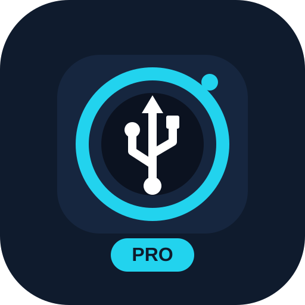

شغّل أي كاميرا USB على جوالك الأندرويد — كاميرا ويب، بطاقة التقاط HDMI، منظار رقمي — عبر كابل OTG وبلا روت.
تحميل التطبيق (APK) جرّبه الآن في المتصفحيفتح التطبيق فور توصيل الكاميرا ويعرض الأجهزة المكتشفة.
اختيار الدقة وعدد الإطارات، مع تدوير وقلب وتكبير.
صور JPG ومقاطع MP4 بالصوت تُحفظ في معرض الجوال.
السطوع والتباين والتشبّع والحدّة إن دعمتها الكاميرا.
عرض الملفات ومشاركتها وحذفها من داخل التطبيق.
خادم RTSP وHTTP، وبث RTMP وSRT، وكشف الحركة.
| اسم الحزمة | com.usbcamerapro.app |
|---|---|
| الإصدار | 0.1.0 (رقم البناء 1) · آخر بناء — |
| الحجم | 4.3 ميجابايت (4,310,589 بايت) |
| بصمة SHA-256 | 995608fa6023f0af78b371841373e4d761a932ea7549a736980cb55f155ff791 |
| التوقيع | توقيع أندرويد v2 · بصمة الشهادة F7:F9:26:4F:1C:EF:ED:4E:48:00:AF:64:5B:15:35:7C:3B:B7:49:41:3F:88:7A:56:11:4F:7B:47:22:25:09:48 |
| الإنترنت | لا يطلب صلاحية الإنترنت إطلاقًا — لا يستطيع إرسال أي صورة أو بيانات خارج الجوال. |
| الصلاحيات |
الكاميرا — لفتح كاميرا USB الميكروفون — لصوت التسجيل فقط، ويمكن إيقافه من الإعدادات الصور والفيديو — لعرض ما التقطه التطبيق في المعرض الخدمة الأمامية — صلاحية تطلبها مكتبة الكاميرا ولا يستخدمها هذا الإصدار |
| المكوّنات | شاشة واحدة، بلا خدمات خلفية، وبلا مشاركة بيانات مع تطبيقات أخرى. |
| الحد الأدنى | أندرويد 10 (API 29) · مبني لأندرويد 15 (API 35) |